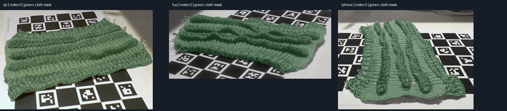

STAGE 02 · first-frame visual check passed · 2026-10-08T15:10:32.068196+00:00
First-frame SAM2 masks reviewed
Local pinned SAM2 inference separates the knitted textile from the printed marker board in all three first frames. Green shows the proposed cloth mask. Full-sequence propagation and hand exclusion are running; later frames require review.

Diagnostic from real source images or model renders; not a desktop screenshot